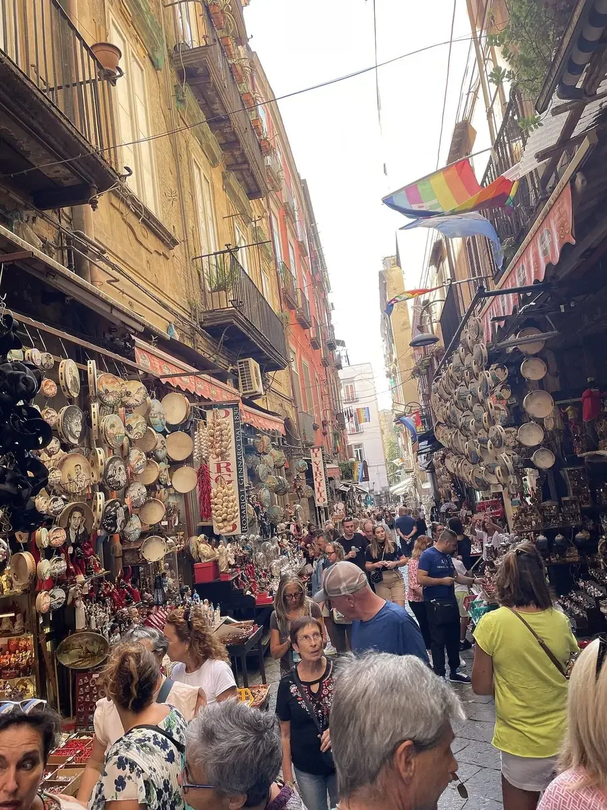
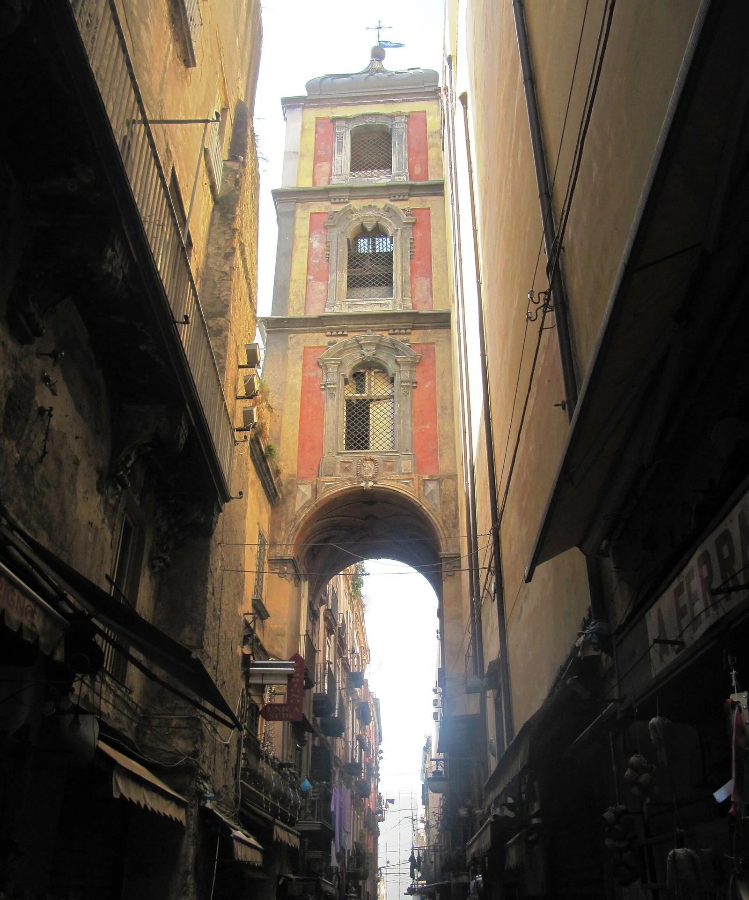
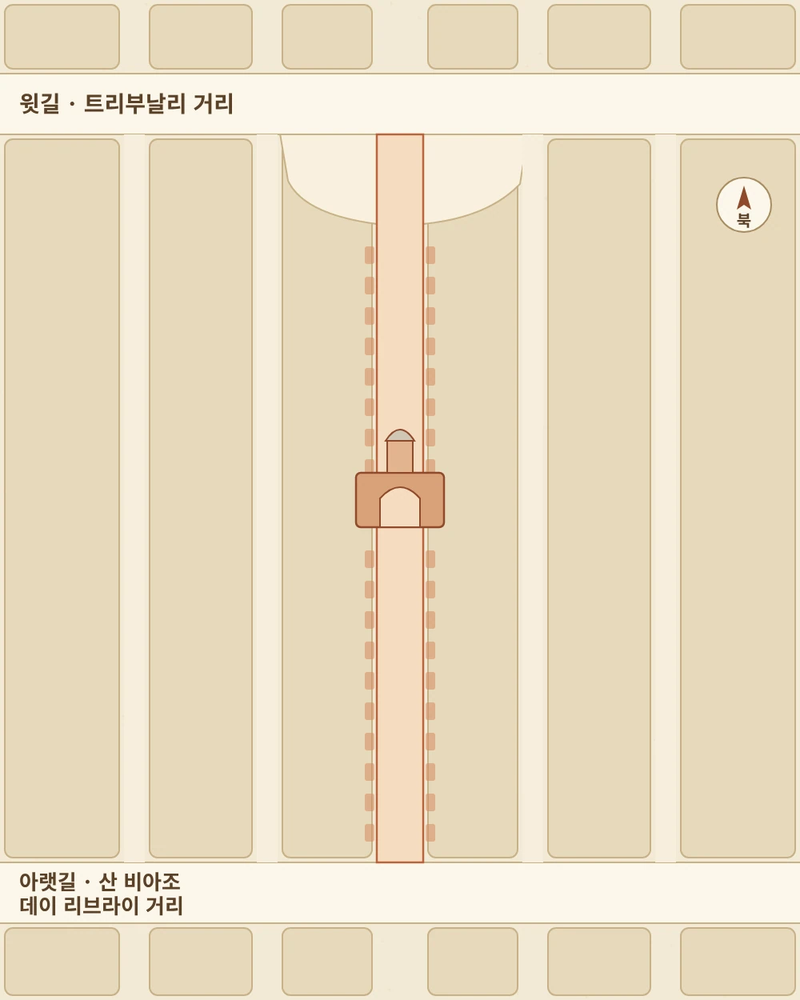
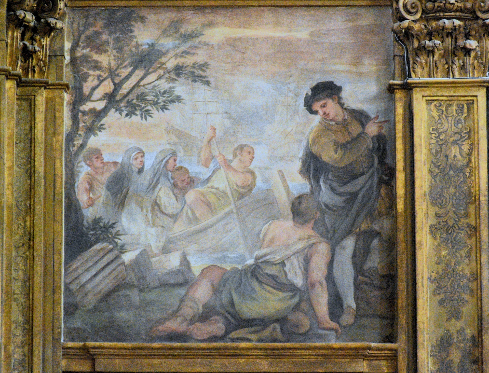
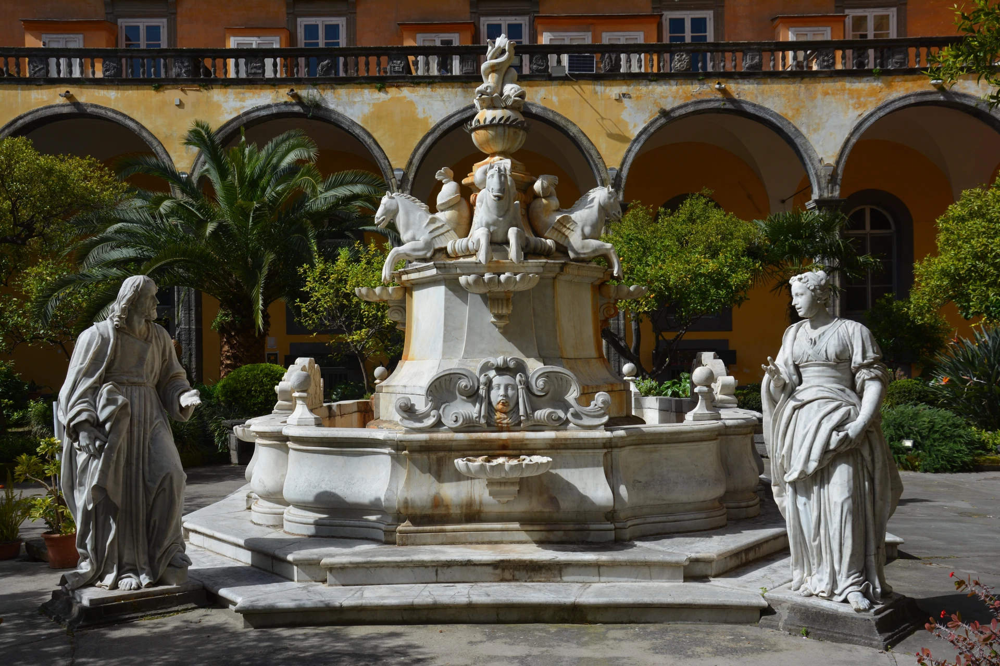

아직 펼치지 않은 카드손바닥 위의 베들레헴 · 1나폴리 산 그레고리오 아르메노 거리나폴리의 이 좁은 골목은 한여름에도 성탄 구유를 팔아요. 사람들은 왜 이 골목을 찾을까요?여름에도 구유 인형을 파는 골목이 있대!
1년 내내 · 가장 붐비는 때는 11월~1월이탈리아 나폴리 · 옛 도심
나폴리 산 그레고리오 아르메노 거리
나폴리 옛 도심에 1년 내내 구유 인형을 파는 좁은 골목이 있어요. 2,500년쯤 전 그리스 사람들이 바둑판처럼 낸 길 가운데 하나예요. 윗길의 광장에서 아랫길까지, 공방과 종탑과 수녀들의 뜰을 지나 골목 끝까지 걸어 내려가 보세요.
나폴리에는 1년 내내 구유 인형을 파는 골목이 있대. 종탑 밑을 지나서 골목 끝까지 같이 걸어 볼까?
검수 전 시안이에요(기준서 2판). 장면에는 기록에 있는 것만 옮겼고, 전해지는 이야기는 그렇다고 밝혔어요. 상상은 ‘눈 감고 상상해 보기’에만 썼어요. 골목 지도는 이 안내서가 그린 길잡이 그림이에요.
시안 확인용카드 단계 미리 보기
1
늘 성탄인 골목
나폴리 옛 도심의 좁은 골목이에요. 양쪽에 구유 인형 공방이 줄지어 있고, 골목 한가운데에서는 종탑이 길 위를 다리처럼 건너질러요.
공방은 1년 내내 문을 열어요. 그래서 이탈리아 관광청은 ‘이 골목은 늘 성탄’이라고 소개해요. 성탄을 앞두면 나폴리 사람들은 집 구유에 더할 인형과 소품을 찾으러 이 골목에 와요.

좁은 골목 위로 종탑이 다리처럼 지나가! 가게마다 작은 인형이 가득해.
물어보기이 골목에서 구유에 넣을 인형을 하나 고른다면, 누구를 고를래?
2
골목을 걸어 내려가기
이 골목은 옛 나폴리의 두 큰길을 남북으로 이어요. 위쪽은 트리부날리 거리, 아래쪽은 산 비아조 데이 리브라이 거리예요. 2,500년쯤 전 그리스 사람들이 바둑판처럼 낸 길 가운데 하나예요.
윗길의 광장에서 출발해, 여섯 곳에 멈추며 아랫길까지 걸어 내려가 보세요.
‘다음 곳으로’를 눌러 윗길의 광장에서 아랫길까지 걸어 내려가 보세요.

산 가에타노 광장공방 골목종탑 다리산 그레고리오 아르메노 성당수녀들의 뜰아랫길위쪽이 북쪽이에요. 실제 거리와 방향은 조금 달라요 · 이 안내서가 그린 골목 그림 지도 · 이탈리아 환경 기금(FAI)과 이탈리아 관광청의 설명을 바탕으로
윗길의 광장에서 아랫길까지, 구유 인형 골목을 끝까지 걸어 내려왔어요.
짧은 골목 하나에 옛 도시의 광장, 수녀들의 성당과 뜰, 오늘의 공방이 겹겹이 쌓여 있어요.
‘다음 곳으로’를 누르면 골목을 한 곳씩 걸어가. 같이 가 보자!
물어보기종탑 밑을 지날 때 위를 올려다보면 무엇이 보일까?
눈 감고 상상해 보기
골목은 어깨가 닿을 만큼 좁아요. 공방 안에서 누군가 손톱만 한 흙 얼굴에 붓으로 눈썹을 그려요. 벽에는 작은 빵과 생선, 바구니가 줄줄이 걸려 있어요. 머리 위로 종탑의 아치가 지나가는 순간, 골목 전체가 커다란 구유 속 마을처럼 느껴져요.
눈을 감아 봐. 좁은 골목에 사람들이 가득해. 가게마다 손톱만 한 빵이랑 생선이 걸려 있어. 머리 위로 종탑이 지나가!
나의 자리
이 골목처럼 우리 동네 길을 구유로 옮긴다면, 길모퉁이에 누구를 세우고 싶나요?
우리 동네 골목으로 구유를 만든다면, 누구 인형을 세울래?
마음에 닿는 한 줄을 고르거나 직접 써 보세요. 한 줄을 남기면 이 자리의 도장이 찍혀요. 이 기기에만 저장돼요.
더 깊이
궁금한 칸만 펼쳐 읽어도 괜찮아요.
알고 보면
골목 이름 ‘산 그레고리오 아르메노’는 ‘아르메니아의 성 그레고리오’라는 뜻이에요. 전해지는 이야기로 그레고리오는 4세기에 아르메니아에 그리스도교를 전한 사람이에요. 나폴리 사람들은 이 골목을 ‘산 리구오로’라고도 불러요. ‘리구오로’는 그레고리오를 가리키는 옛 나폴리 말이에요.
바둑판 길 옛 나폴리는 그리스 사람들이 바둑판처럼 길을 낸 도시예요. 동서로 난 큰길 사이를 남북 골목들이 이었어요. 이 골목도 그 남북 골목 가운데 하나예요.
15세기의 이름 15세기에는 이 길을 ‘플라에티아 노스트리아나’라고 불렀어요. 가난한 사람들을 위해 목욕탕을 지은 노스트리아노 주교의 이름을 딴 거예요.
성화와 성상을 둘러싼 다툼 8~9세기 비잔티움 제국에서, 교회에서 성화(이콘)를 써도 되는지를 두고 벌어진 다툼이에요. ‘성상 파괴 논쟁’이라고도 불러요.
그림 속 골목의 주인

성당 입구 쪽 벽, 수녀들의 기도석 난간에는 나폴리 화가 루카 조르다노가 1684년에 그린 벽화 세 장면이 있어요. 세 장면 모두 수녀들이 나폴리에 온 이야기예요.
이탈리아어 위키백과는 세 장면을 이렇게 소개해요. 수녀들이 배를 타고 나폴리 바닷가에 닿는 장면, 성 그레고리오의 유해를 옮기는 장면, 나폴리 사람들이 수녀들을 맞아들이는 장면이에요. 위 그림은 그 가운데 바닷가에 닿는 장면이에요.
기록마다 다른 점
종탑이 잇는 것 이탈리아 환경 기금(FAI)은 종탑이 성당과 수도원을 이어 준다고 소개해요. 이탈리아어 위키백과는 수도원의 서쪽 건물과, 옛 산 판탈레오네 자리였던 동쪽 건물을 잇는다고 적었어요.
수녀들이 온 까닭 FAI는 수녀들이 성화와 성상을 둘러싼 다툼을 피해 왔다고 적었어요. 이탈리아어 위키백과는 수녀들이 성녀 파트리치아를 따라 콘스탄티노플에서 왔다고 소개해요.
케레스 신전 이탈리아 관광청은 로마 시대 이 길에 곡식의 여신 케레스의 신전이 있었고, 사람들이 작은 흙 인형을 바쳤다고 소개해요. 오늘의 공방이 거기서 시작됐다는 것은 전해지는 이야기예요. 구유 인형 공방의 전통은 18세기 무렵부터예요.
골목의 1년
확인한 날 · 2026년 11월 18일 · 바뀌기 쉬운 정보라 정기적으로 다시 확인해요
1년 내내 공방은 1년 내내 문을 열고, 11월부터 1월까지 가장 붐벼요.
구유 장터 2025년에는 11월 14일에 불을 밝히며 ‘구유 장터’가 열렸어요. 옛 도심 큰길을 따라 가판이 섰고, 100만 명 가까이 찾을 것으로 내다봤어요.
별난 목동들 몇 해 전부터 공방들은 텔레비전과 영화의 유명인, 나폴리의 배우와 가수 인형도 만들어요. 구유 속 목동처럼 세워 웃음을 주는 인형들이에요.
직접 가 보기

확인한 날 · 2026년 11월 18일 · 바뀌기 쉬운 정보라 정기적으로 다시 확인해요
골목은 나폴리 옛 도심 한가운데에 있어요. 성당과 회랑은 여는 시간이 짧고 자주 바뀌니, 가기 전에 꼭 확인해 주세요.
골목 위쪽 산 로렌초 마조레 성당의 땅 밑 옛 도시 터는 지금 잠시 문을 닫았다고 해요.
골목 끝까지 금박
‘골목을 걸어 내려가기’에서 윗길의 광장부터 아랫길까지 여섯 곳을 따라가면 카드에 금박이 입혀져요.
광장에서 아랫길까지 여섯 곳 따라가기
아이와 함께 채색
아이와 함께 ‘영화처럼 보기’를 끝까지 보면 카드가 채색돼요.
아이와 함께 ‘영화처럼 보기’를 끝까지 보기
근거 보기 (12)
- 이탈리아 환경 기금(FAI): Via San Gregorio Armeno — 두 큰길을 잇는 그리스·로마 도시의 골목, ‘산 리구오로’, 골목 한가운데의 종탑(성당과 수도원을 이음), 성당 가까이의 회랑과 따로 난 문, 끝자락의 산 젠나로 알올모, 15세기 이름, 유명인 인형
- 이탈리아 환경 기금(FAI): Chiostro di San Gregorio Armeno — 성상 파괴 다툼을 피해 유해를 모셔 온 수녀들, 수녀들의 단 하나의 바깥 뜰, 오렌지나무, 마테오 보틸리에리의 그리스도와 사마리아 여인 상
- 이탈리아 관광청: San Gregorio Armeno — 케레스 신전과 흙 인형 이야기, 18세기 무렵 시작된 구유 인형 공방, ‘이 골목은 늘 성탄’, 1년 내내 여는 가게
- 이탈리아 관광청: La Neapolis Sotterrata — 산 가에타노 광장, 기원전 5세기 그리스 광장 위에 들어선 로마 광장, 1세기 로마 시장
- 스카벡(캄파니아 문화유산 기관): Complesso di San Lorenzo Maggiore — 옛 도시의 한가운데 광장이 남은 산 가에타노 광장, 성당 땅 밑 10m쯤의 옛 터, 잠시 문 닫음(2026년 11월 18일 확인)
- Napolitan.it(2014.11.30): Non solo pastori a San Gregorio Armeno — 성탄을 앞두고 이 골목에서 구유 인형과 소품을 찾는 나폴리 사람들의 풍습
- Napolike: San Gregorio Armeno — 1년 내내 여는 공방, 가장 붐비는 11월~1월
- QdNapoli(2025.11.8): 2025년 구유 장터 — 11월 14일 불 밝힘, 옛 도심 큰길의 가판, 100만 명 가까운 방문 예상
- 브리태니커: Saint Gregory the Illuminator — 전해지는 이야기로 4세기 아르메니아에 그리스도교를 전한 사람
- 브리태니커: Iconoclastic Controversy — 8~9세기 비잔티움 제국에서 성화(이콘)를 두고 벌어진 다툼
- Taylor & Francis 학술서 한 장의 요약: 수녀들의 기도석 난간에 루카 조르다노가 1684년에 그린 벽화 세 점, 그리스 바실리오회 수녀들이 나폴리에 온 이야기
- 이탈리아어 위키백과(길잡이): Chiesa di San Gregorio Armeno — 8세기 콘스탄티노플에서 온 수녀들, 종탑이 잇는 두 건물, 1684년 조르다노의 세 장면
그림·사진·소리 출처
‘처음 만나는 기독교 문화’의 깊은 카드예요. 카드 단계와 남긴 글은 이 기기에만 저장돼요.